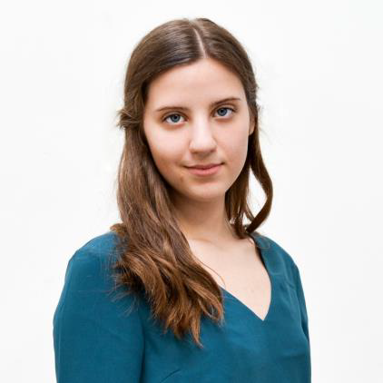

Én és a fotózás
A nevem Szalai Boglárka Valentina. Már hat éve foglalkozom fotográfiával. 2020 májusában pedig megszereztem az OKJ-s szakképesítésről a papírom.
Elég tág az általam készített képek repertoárja. Szeretek szabadtéren képeket készíteni, akár portréról akár épületfotókról legyen szó. Mégis a számomra legkomfortosabb közeg a műterem, ahol kiélhetem kísérletező hajlamom. Számomra mindig is nagyon izgalmas gondolta volt, hogy egy zárt szobában egy kamarával és néhány lámpával hogyan lehet kézzelfoghatóvá tenni egy fotót. Ebből kifolyólag sok időt töltöttem el a műteremben munkám során. Készítettem portrékat, termék fotókat, és egyéb műtermi összeállításokat.
A képeim körülbelül fele készült digitális technikával, ugyanis analóg fotózással és filmhívással is foglalkozom. A portfóliómban továbbá található cianotípia is, ami még a fotográfia hajnalán született technika. Nagyon szeretek archaikus technikákkal kísérletezni, és ezt a tudást tovább adni, így több workshopot is tartottam már a témában.